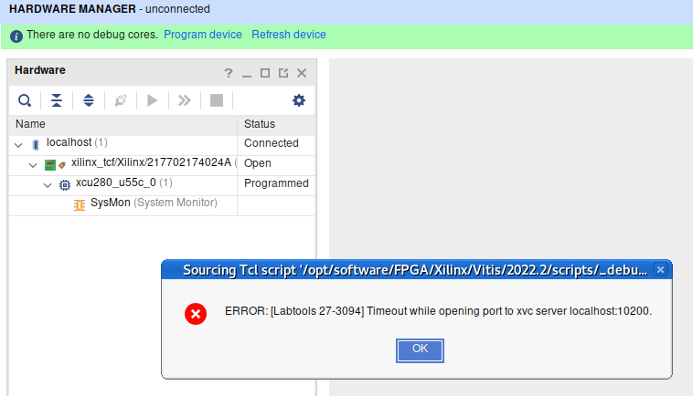
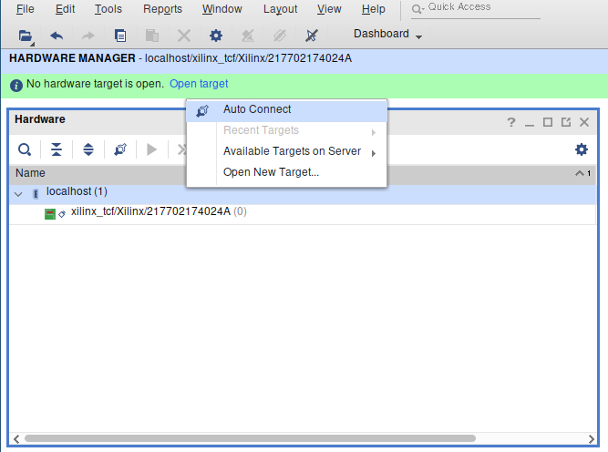
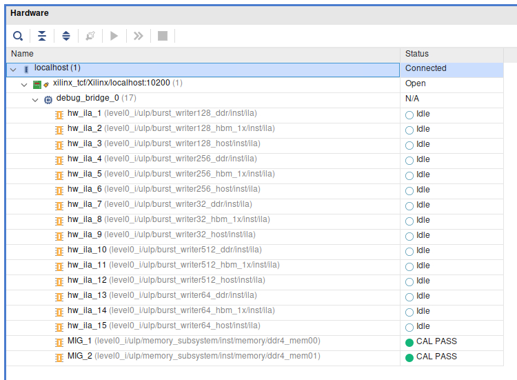
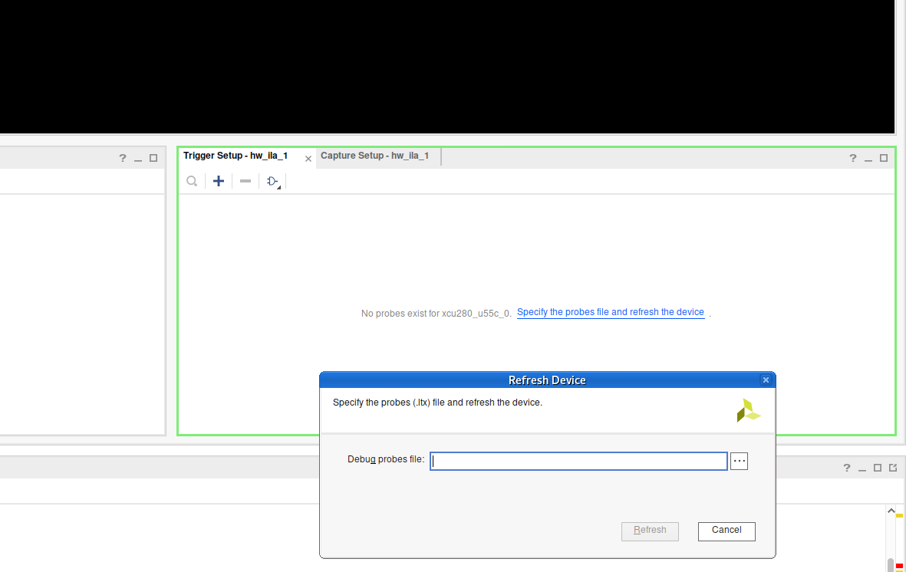
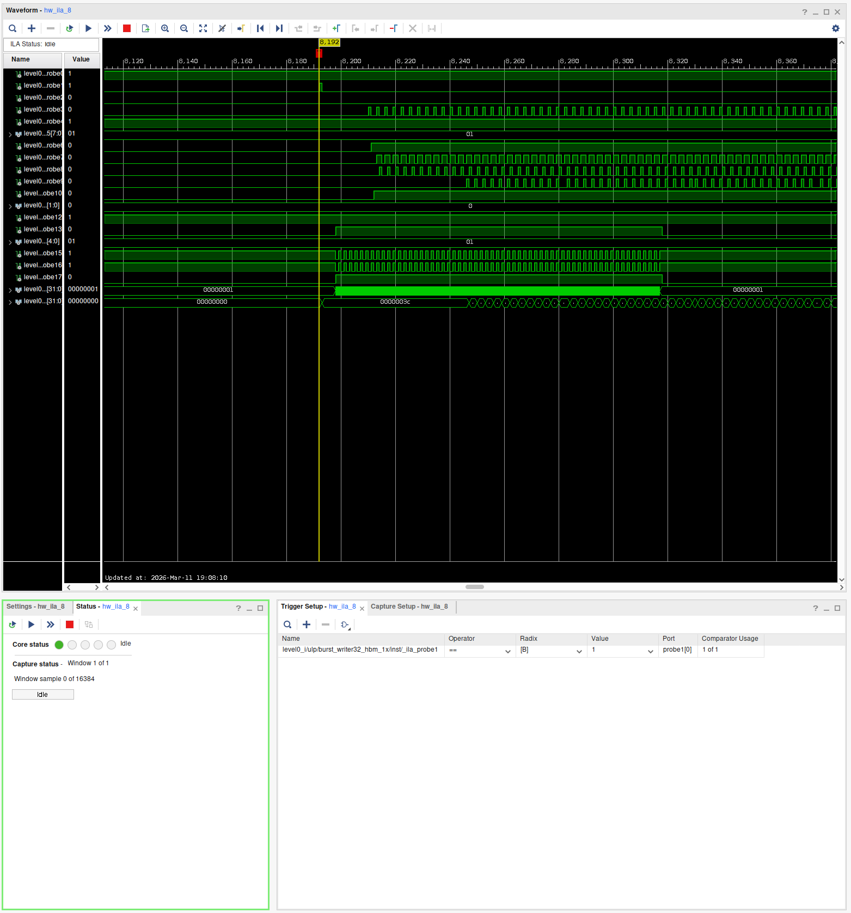
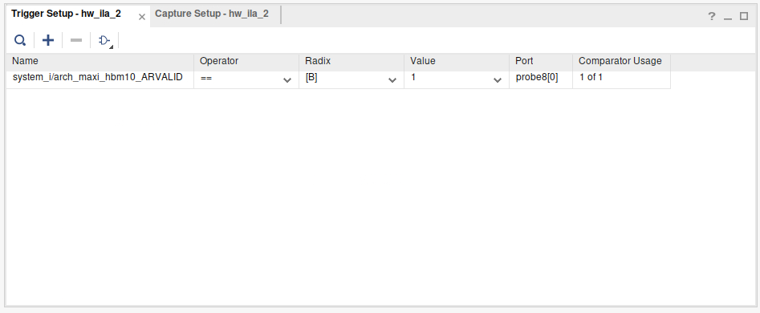
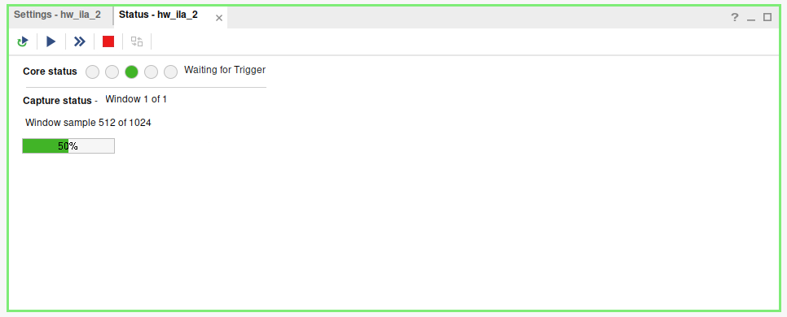
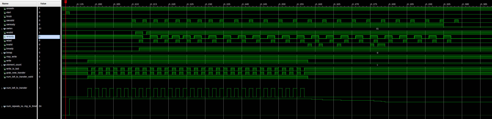

Using Xilinx' Integrated Logic Analyzer for SUS Designs
If your simulator has failed you, and you're pulling out your hair staring at a failing hardware implementation, your last resort is the Integrated Logic Analyzer. This is a small IP core that you instantiate into your design, which upon detecting a triggering signal, records all probe signals for 16384 cycles in its in-built BRAM. It only has inputs, and the IP core itself figures out how to connect itself to the JTag interface on the FPGA card. You need only instantiate it and wire it up to your signals.
The example in this tutorial is for using it within a SUS kernel in XRT on Noctua 2
Overview
Part 1: Synthesizing a design with an Integrated Logic Analyzer
- Wire up an "extern" ILA module, to all the signals you would like to view.
- Creating the
my_cool_ilaIP core inpack_kernel.tcl. - Synthesize your design. (Your kernel can be instantiated multiple times, Vivado automatically finds the ILA cores and connects them to it's debugging system)
Part 2: Running your design and viewing the recorded ILA data
- Open VNC on one of the FPGA nodes
- Load the Bitstream
- Open the vivado "Hardware Debugger"
- Set up your triggers
- Activate the ILA
- Execute your program
- Observe Waveforms
Part 1: Synthesizing
Wire up an "extern" ILA module, to all the signals you would like to view.
In my case, I wanted to debug the AXI4 interface to memory for the Bursting Memory Writer.
Start by creating an extern module for the ILA. In the next section we will instantiate the ILA IP core, but for now we'll declare it's interface, with all the probes we would want to view. They must be named probeN in ascending order.
(You can specify the widths of up to 1024 probes. By default they are 1-bit wide.)
extern module my_cool_ila{
domain clk
input bool probe0'0
input bool probe1'0
input bool probe2'0
input bool probe3'0
input bool probe4'0
input int#(FROM: 0, TO: 256) probe5'0
input bool probe6'0
input bool probe7'0
input bool probe8'0
input bool probe9'0
input bool probe10'0
input bool[2] probe11'0
input bool probe12'0
input bool probe13'0
input int#(FROM: 0, TO: 32) probe14'0
input bool probe15'0
input bool probe16'0
input bool probe17'0
input int#(FROM: 0, TO: pow2#(E: 32)) probe18'0
input int#(FROM: 0, TO: pow2#(E: 32)) probe19'0
}
I put every signal into its own domain, such that no pipelining registers would affect the view of the signals. Perhaps if you're debugging a pipeline, this may be desirable. Adjust to taste.
Important: Note that the ports that aren't bool correspond to the wider integers
Once you have the extern module my_cool_ila, instantiate it and wire it up:
module bench_burst_writer#(int AXI_WIDTH) {
// ...
my_cool_ila ila
ila.probe0 = aresetn
ila.probe1 = ila_start
ila.probe2 = ila_finish
ila.probe3 = m_axi_awvalid
ila.probe4 = m_axi_awready
ila.probe5 = m_axi_awlen
ila.probe6 = m_axi_wvalid
ila.probe7 = m_axi_wready
ila.probe8 = m_axi_wlast
ila.probe9 = m_axi_bvalid
ila.probe10 = m_axi_bready
ila.probe11 = m_axi_bresp
ila.probe12 = writer.may_write
ila.probe13 = writer.write
ila.probe14 = writer.element_count
ila.probe15 = writer.write_is_last
ila.probe16 = grab_new_transfer
ila.probe17 = num_left_to_transfer_valid
ila.probe18 = num_left_to_transfer
ila.probe19 = num_repeats_remaining_to_finish
}
Important considerations for wiring it up:
You'll want a signal you can trigger the ILA on, as it can only . In this case, I used the start wire the axi_ctrl_slave produces.
Note: There's no need to explicitly specify that a given signal is your trigger right now. The ILA has functionality to be dynamically reconfigured to trigger on a wide range of conditions
When choosing what signals to probe, consider carefully. Add any signal you believe might be useful in tracking down your issue, since a synthesis roundtrip can easily take 3 hours.
Adding the IP core to pack_kernel.tcl
Now that you have the as-of-yet undefined ILA wired up in your SUS design, you can expliticly create it in your pack_kernel.tcl:
# Existing pack_kernel.tcl code...
set KERNEL_NAME burst_writer${AXI_WIDTH}
create_project ${KERNEL_NAME} ./${KERNEL_NAME} -part $PART
add_files -norecurse \
{
../../sus_codegen.sv \
}
# Add these lines:
create_ip \
-name ila \
-vendor xilinx.com \
-library ip \
-version 6.2 \
-module_name my_cool_ila \
-dir ./ip_creation
set_property -dict [list \
CONFIG.C_MONITOR_TYPE {Native} \
CONFIG.C_NUM_OF_PROBES {20} \
CONFIG.C_PROBE5_WIDTH {8} \
CONFIG.C_PROBE11_WIDTH {2} \
CONFIG.C_PROBE14_WIDTH {5} \
CONFIG.C_PROBE18_WIDTH {32} \
CONFIG.C_PROBE19_WIDTH {32} \
CONFIG.C_DATA_DEPTH {16384} \
CONFIG.C_TRIGOUT_EN {false} \
CONFIG.C_TRIGIN_EN {false} \
CONFIG.C_INPUT_PIPE_STAGES {0} \
CONFIG.C_EN_STRG_QUAL {1} \
CONFIG.C_ADV_TRIGGER {true} \
CONFIG.ALL_PROBE_SAME_MU {true} \
] [get_ips my_cool_ila]
# the rest of pack_kernel.tcl ....
ipx::package_project -root_dir ./${KERNEL_NAME}_ip -vendor pc2 -library sus-designs -taxonomy /UserIP -import_files
You can configure CONFIG.C_DATA_DEPTH to a reasonable value for how much data you wish to collect in a single run. Note that this times the number of probe bits determines how much BRAM this ILA will synthesize.
You can specify up to 1024 probes. By default they are 1-bit wide.
For more configuration options, it is recommended to create the "ILA" IP core in Vivado, configure it in GUI, and copy over the generated TCL code from the TCL Console.
Note: ILAs consume BRAMs to store their samples. You must have enough free BRAM resources to store all samples. You may need to be conservative with the amount of cycles you record as you may quickly run out of BRAMs.
Note: ILAs cannot use URAMs
And synthesize!
This should be your normal way to build your bitstream. For this repository, that would be make U280/overlay_hw.xclbin
When your flow doesn't generate a .ltx file
The .ltx file contains information about your ILAs. Namely the names of the debug probes and their sizes. You need to load in this file to look at the waveforms.
You don't need to follow this step if you're using XRT.
Normally, when you write the bitstream, a .ltx file should be generated automatically. If it is not, you can open up your implemented Vivado project, and execute the following TCL command:
write_debug_probes /path/to/file.ltx
Part 2: Analyzing
Open VNC on one of the FPGA nodes
Use the VNC module on Noctua2:
[lennartv@n2fpga16 ~]$ ml tools/vnc/8.10
[lennartv@n2fpga16 ~]$ VNC.sh
This will print an SSH command, like the following:
#############
ssh -L 5901:/tmp/lennartv.runtimedir/vnc1 n2fpga16
Afterwards connect with your local VNC client to your local port 5901
#############
Use this ssh command to connect to the node.
Since you likely don't yet have the fpga or compute nodes in your .ssh/config, here's a snippet that should help you:
Host noctua2-jump
HostName fe.noctua2.pc2.uni-paderborn.de
User lennartv
RequestTTY force
IdentityFile ~/.ssh/id_ed25519
IdentitiesOnly yes
Host n2login1
HostName n2login1
User lennartv
ProxyJump noctua2-jump
Host n2cn* n2gpu* n2fpga*
HostName %h
ProxyJump n2login1
User lennartv
Load the Bitstream
You should be on a node with your FPGA. First and foremost, load your program once, such that the bitstream has been loaded onto the FPGA. If you're working with a system such as tapasco and you have a .bit bitstream file, you can also just flash the bitstream with tapasco-load-bitstream bitstream.bit.
Optional: Add a way to "pause" your host code after the bitstream loads (and before any kernel invocation you may want to inspect)
void debug_pause() {
std::cout << "Paused, press ENTER to continue..." << std::endl;
std::cin.ignore(std::numeric_limits<std::streamsize>::max(), '\n');
}
void main() {
xrt::device device = xrt::device("0000:a1:00.1");
xrt::xclbin xclbin = xrt::xclbin("overlay_hw.xclbin");
xrt::uuid xclbin_handle_ptr = xrt::uuid(device.load_xclbin(xclbin));
debug_pause();
// start running kernels
}
Run your host code until it hits the pause block
./main.x
Open the vivado "Hardware Debugger"
Create a new terminal and run debug_hw --vivado --ltx_file /path/to/file.ltx. This should open the hardware manager with your LTX file opened.

It may open in a broken state, and in this case, refresh the "localhost" debug server. Then, connect to your card with "Auto Connect".

It should now show all your ILAs. Select one of your ILAs.

If it doesn't show your probes yet, load your .ltx file by clicking "Specify the probes file and refresh the device".


You can see the waveforms in the main panel, bottom left you see the current status of the selected ILA. Bottom right are the triggers.
Set up your triggers
On the bottom right, add a trigger. A trigger is a condition that the ILA looks for to start recording samples. This is because the memory to store samples is limited, and you only want to record the time span you're actually interested in.

A detailed documentation on using the hardware manager and setting the triggers can be found here: https://docs.xilinx.com/r/en-US/ug908-vivado-programming-debugging/Connecting-to-the-Hardware-Target-and-Programming-the-Device?tocId=xP8mrtmlSr~QgWEr5ZpJWA
Activate the ILA.
"activate" the ILA on the bottom left. It will start collecting samples filling up half the buffer. Once the condition for your trigger is met, it will collect samples to fill the remainder of the buffer. You can configure where this midpoint is.

Continue execution of your executable.
Run your design. In doing this, your design should trigger the ILA you've activated. When you go back to the hardware manager, you should see some nice waveforms.
Bonus: Can you spot the AXI violation?
